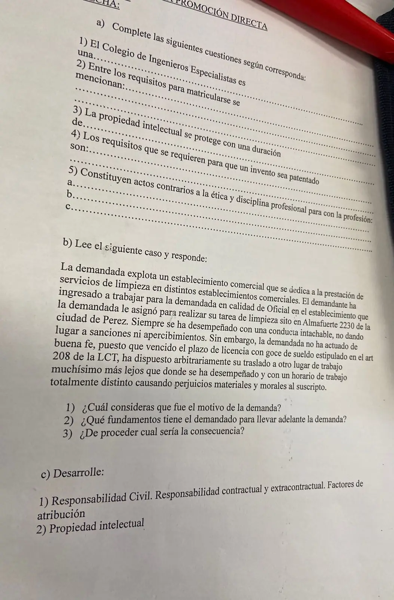

2° parcial, 23/10/2024 (unidades 4, 5 y 6)
2° parcial, 23/10/2024
Enunciado


Preguntas con opciones
Salen de este examen, adaptadas. Dejalas para el final, porque las opciones pueden dar pistas.
- 1
En un factor de atribución subjetivo, la impericia es...
Se tomó: 2° parcial 23/10/2024, adaptada
La culpa tiene tres formas. Imprudencia (acto precipitado), negligencia (falta de atención) e impericia. El dolo es la intención de dañar.
- 2
¿Qué es el Colegio de Ingenieros Especialistas de Santa Fe según la ley 11.291?
Se tomó: 2° parcial 23/10/2024, adaptada
Controla el ejercicio de la profesión, gobierna la matrícula y ejerce el poder disciplinario. Se divide en el Colegio de Distrito I (Santa Fe) y el de Distrito II (Rosario).
Propuesta de respuesta
Respuesta no verificada. La propuso Luta Studios con inteligencia artificial y ningún docente la revisó. Puede tener errores.
a) Completar
El Colegio de Ingenieros Especialistas es una persona jurídica de derecho privado que ejerce funciones públicas (ley 11.291, art. 1).
Entre los requisitos para matricularse se mencionan la inscripción previa en el Registro Especial del Colegio, fijar domicilio real, legal y profesional en la provincia, acreditar con documentos el título de ingeniero, no tener causales de cancelación de la matrícula y pagar el derecho de matriculación (ley 11.291, art. 21).
La propiedad intelectual se protege con una duración de la vida del autor y 70 años después de su muerte, en los derechos de autor de la ley 11.723. Los derechos conexos duran 70 años desde la primera interpretación, publicación o emisión.
Los requisitos que se requieren para que un invento sea patentado son novedad, mérito inventivo y aplicación industrial (ley 24.481).
Constituyen actos contrarios a la ética y disciplina profesional para con la profesión
- a. los actos que comprometan el honor, el decoro o la dignidad de la profesión,
- b. la negligencia reiterada o la ineptitud manifiesta,
- c. la violación del régimen de incompatibilidades.
El detalle está en el Código de Ética Profesional, que no está en el material. Estas tres son causas de sanción del art. 18 de la ley 11.291, que también nombra incumplir el Código de Ética.
b) El caso
1. Motivo de la demanda. El trabajador demanda porque, al terminar la licencia paga del art. 208 LCT, la empresa lo trasladó de forma arbitraria a un lugar de trabajo mucho más lejos y le cambió por completo el horario. Es un ejercicio abusivo del ius variandi, la facultad del empleador de modificar las condiciones del contrato. El trabajador reclama además los perjuicios materiales y morales que le causó.
2. Fundamentos. El empleador puede cambiar el horario o mudar al trabajador de una sucursal a otra (art. 66 LCT), pero solo si el cambio cumple tres condiciones, y acá no se cumplen.
| Condición del art. 66 | En el caso |
|---|---|
| Que sea razonable, funcional a la empresa | El traslado es arbitrario y no se da ninguna razón de la empresa |
| Que no altere lo esencial, como la remuneración, la categoría o la jornada | El horario pasa a ser totalmente distinto, y eso puede tocar la jornada |
| Que no perjudique al trabajador | El nuevo lugar queda muchísimo más lejos y le causa perjuicios materiales y morales |
Además, ambas partes deben actuar de buena fe (art. 62 LCT), y el enunciado dice que la empresa no lo hizo. Tampoco hay una causa disciplinaria, porque el trabajador tuvo siempre una conducta intachable, sin sanciones ni apercibimientos. Si la empresa se defiende con su derecho a organizar el trabajo, ese derecho tiene los mismos límites del art. 66.
3. Consecuencia, si procede. Si el empleador impone cambios esenciales o que perjudican, el trabajador puede considerarse despedido. Eso es el despido indirecto, por injuria grave del empleador. Antes tiene que intimarlo a cumplir, o sea a volver a las condiciones de antes. Si el despido indirecto procede, cobra la misma indemnización que en un despido sin causa.
- Indemnización por antigüedad (art. 245), un mes de sueldo por año trabajado o fracción mayor de tres meses, sobre la mejor remuneración normal y habitual.
- Indemnización sustitutiva de preaviso, de un mes si tiene menos de 5 años de antigüedad y de dos meses si tiene más (art. 231).
- Integración del mes de despido.
- SAC y vacaciones proporcionales.
c) Desarrollar
1. Responsabilidad civil. Busca reparar económicamente el daño que se le causó a la víctima. Es contractual cuando sale de incumplir una obligación y extracontractual cuando sale de violar el deber general de no dañar a otro. Tiene tres funciones, resarcitoria, preventiva y punitiva. La resarcitoria exige cuatro presupuestos, antijuridicidad, factor de atribución, nexo causal y daño (la lesión a un derecho o interés no prohibido, art. 1737 CCyC).
El factor de atribución es la razón por la que se le atribuye el daño a alguien.
- Subjetivo. Importa la culpa o el dolo. La culpa es no tener la diligencia debida, y tiene tres formas, imprudencia (obrar precipitado), negligencia (falta de atención) e impericia (falta de conocimiento o habilidad en la profesión). El dolo es dañar con intención o con manifiesta indiferencia por los intereses ajenos.
- Objetivo. No importa la culpa. Pasa, por ejemplo, cuando la obligación es de resultado (art. 1723) y en la responsabilidad del principal por el hecho del dependiente (art. 1753).
Para el profesional liberal, como el ingeniero, es subjetiva, salvo que haya prometido un resultado concreto y no lo logre (art. 1768).
2. Propiedad intelectual. Es una de las dos ramas de los derechos intelectuales, derechos patrimoniales que nacen del intelecto y que respalda el art. 17 de la Constitución. La regula la ley 11.723. Protege la forma en que se expresa una idea, se adquiere de forma automática con la creación y su ámbito es internacional. La propiedad industrial, en cambio, protege ideas técnicas aplicadas a la industria y hay que solicitarla al INPI.
- Derechos de autor. Cubren obras literarias, científicas y artísticas, programas de computación y bases de datos. Duran la vida del autor y 70 años después de su muerte.
- Derechos conexos. Protegen a intérpretes, productores de fonogramas y organismos de radiodifusión. Duran 70 años desde la primera interpretación, publicación o emisión.
- Software. La ley 11.723 protege su código fuente y su código objeto. El titular es la empresa cuyos empleados lo hicieron en el desempeño de sus funciones, salvo pacto en contrario.
Respuesta no verificada. Puede tener errores.
Se armó con la página del 2° parcial de la materia (Colegio de Ingenieros Especialistas, Derechos intelectuales, Contrato de trabajo y Responsabilidad civil), que sigue la ley 11.291, el manual y las diapositivas de contrato de trabajo y las diapositivas de responsabilidad civil de la cátedra.
Quedó en duda: En a5 el Código de Ética no está en el Drive, así que las tres respuestas son causas de sanción del art. 18 de la ley 11.291 y la cátedra puede esperar otras. Las duraciones y los requisitos de patente salen de resúmenes de alumnos. En b2 la hoja dice «el demandado», y se leyó como los fundamentos de quien demanda, que es el trabajador. El material no explica qué licencia es la del art. 208 LCT, así que se nombra como la trae el enunciado. En b2 el art. 66 nombra el horario entre los cambios posibles, así que el peso está en que el cambio es arbitrario y perjudica, más que en la jornada. En b3 el material solo da el despido indirecto. No dice si el trabajador puede reclamar seguir trabajando en las condiciones de antes, ni cómo se cobran los daños morales que pide.
¿Cómo te fue?
Marcá cada tema del examen. Las preguntas con opciones ya se corrigieron solas.
- Colegio de IngenierosColegio de Ingenieros Especialistas, en 2° parcial
- Propiedad intelectualPropiedad intelectual, en 2° parcial
- PatenteCómo viene el examen, en 2° parcial
- Contrato de trabajoContrato de trabajo, en 2° parcial
- Responsabilidad civilResponsabilidad civil, en 2° parcial